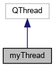
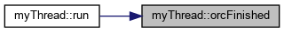

Kylin-scanner API
信号
|
Public 成员函数
myThread类 参考
#include <
scan_display.h
>
类 myThread 继承关系图:

[
图例
]
myThread 的协作图:
[
图例
]
信号
void
orcFinished
()
Public 成员函数
void
run
() Q_DECL_OVERRIDE
成员函数说明
◆
orcFinished
void myThread::orcFinished
(
)
signal
这是这个函数的调用关系图:

◆
run()
void myThread::run
(
)
该类的文档由以下文件生成:
src/
scan_display.h
src/
scan_display.cpp
制作者
1.8.17
 1.8.17
1.8.17